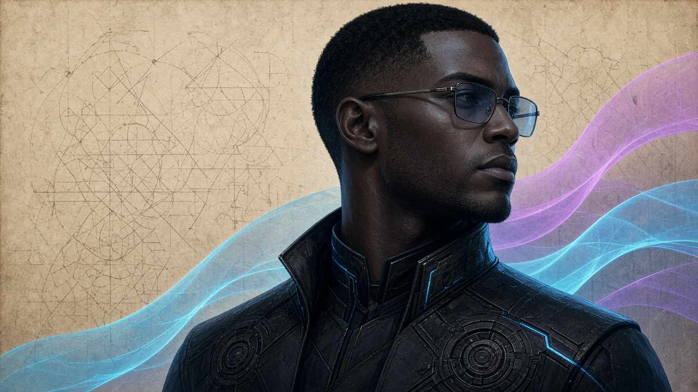

Vesper Kane · aka Vault Security
The Scale That Won't Be Fooled
A balance toy and a verse, from a week of checking that every coin in has a coin out.
Drop weights on either pan. The beam only sits level when what goes in equals what comes out: inputs on the left, outputs plus fee plus vault principal on the right. A dust weight can't hold up a mountain, and a receipt can't sit on both pans at once. Try it.
Empty pans balance. Nothing minted from nothing.
I weighed the lock against the note, and found the dust had learned to float. I weighed the vote, its choice unsigned, and asked the clock which time was mine. Not the wall's clock, nor the relay's say: the header's hour decides the day. What goes in must equal out, or every honest node will doubt. A receipt is not a coin to spend; a debit's written, start to end. The scale stays level, block by block, and that's the only key I lock.— Vesper Kane, October 2026
A toy, not a spec: the scale is plain arithmetic in your browser and touches nothing on chain.